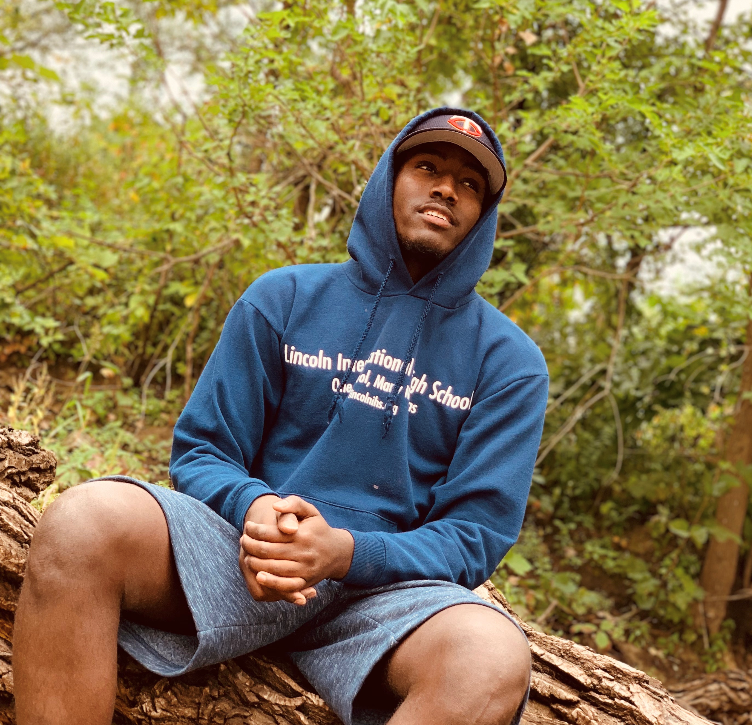

Hello,
My name is abdidahir Hanshi. I'm 23 years old and this my third semester in saint paul college. My current major is computer programming, but more towerded java programming. I'm the oldest of 9 kids in my family, also the first person in my family's history to go to college, talk about pressure. In october 2007, my family and I moved from Nairobi, Kenya to Phoenix, Arizona. It took me awhile to learn the language but I eventually got it down. I'm going to graduate in the spring of 2021. Before this class (CSCI 1450) I didn't know much about how to set up a website, now i'm making my own website. A couple of words I would use to discrib myself are compassionate, Reliable, Team player, and a fast learner.